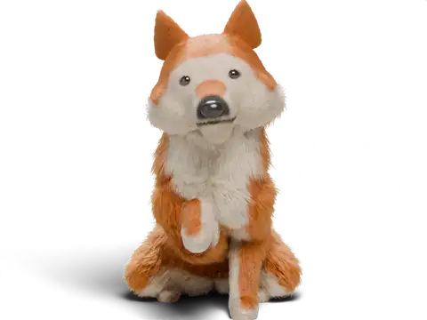
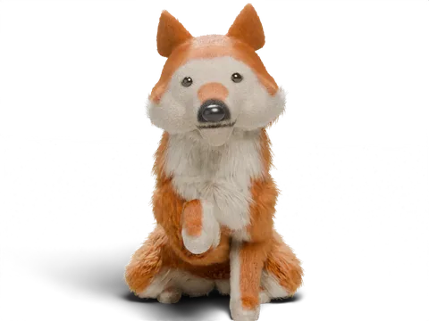

Sitspark: educa el teu cadell o gos amb calma
Educació amb reforç positiu en sessions curtes cada dia, mostrada pas a pas per un Shiba animat. La primera classe i la primera lliçó de cada classe són gratis. Sense compte.
Baixa-la a l'App StoreiPhone amb iOS 27. Android està en proves.


Per què la gent tria Sitspark

La primera classe és gratis de debò
Nom, assegut i una primera crida, més el clicker, el temporitzador i el progrés. Per sempre, no per tres dies.

24,99 € l'any, no 99
O 6,99 € al mes. Sense pla setmanal i sense anuncis. Un sol desenvolupador, cap educador en nòmina.

Sense compte, IA privada
No cal registrar-se. L'educador d'IA funciona al teu iPhone: les teves preguntes no en surten.
Com funciona una lliçó

Mira el Shiba
Cada lliçó es mostra amb un vídeo curt del moviment, pas a pas.

Practica cinc minuts
Un lector de mans lliures diu cada pas en veu alta mentre fas clic i premies.

Mira com es consolida
Cada habilitat passa d'Aprenent a Fiable i a Dominada, amb recordatoris amables.
Què hi ha a dins
- 9 classes i 46 lliçons, del nom i l'assegut a la crida, la corretja fluixa i els trucs
- Un clicker ràpid, un lector de passos de mans lliures, un registre de pipí i caca i un monitor de lladrucs
- Consells per a nou grups de races
- Plus: un educador d'IA privat i plans de 7 dies que funcionen al teu dispositiu
Guies per a qui té un cadell

El cadell mossega les mans: un pla de 3 dies
Per què els cadells mosseguen mans i roba, i una rutina tranquil·la i sense càstigs que funciona en pocs dies.
Llegeix la guia →
Ensenyar el cadell a fer pipí fora: horaris per edat
Cada quant cal treure un cadell a les 8, 12 i 16 setmanes, i què fer quan s'ho fa a casa.
Llegeix la guia →
La primera nit del cadell: transportí, plors i son
Com preparar la primera nit amb un cadell, què fer quan plora i com acostumar-lo al transportí amb suavitat.
Llegeix la guia →
El gos estira la corretja: com aconseguir que pari
Una manera sense força d'ensenyar a caminar amb la corretja fluixa: per què els gossos estiren i la rutina que ho canvia.
Llegeix la guia →
Ensenyar el gos a venir quan el crides
Com construir una crida fiable amb una paraula especial, premis molt bons i una corretja llarga.
Llegeix la guia →Acostumar el cadell al transportí, pas a pas
Com fer del transportí un lloc que el cadell tria, i quanta estona s'hi pot estar.
Llegeix la guia →Comença aquest vespre
La primera classe demana cinc minuts al dia. La primera classe i la primera lliçó de cada classe són gratis, sense compte.
Baixa-la a l'App Store